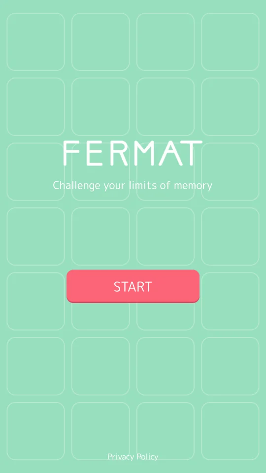
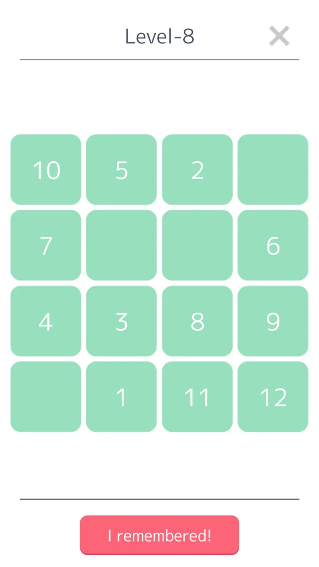
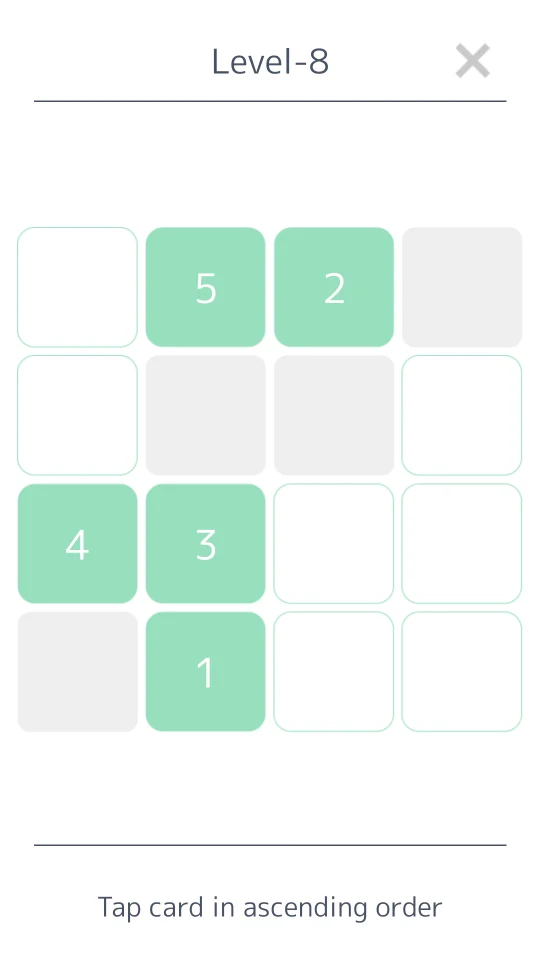
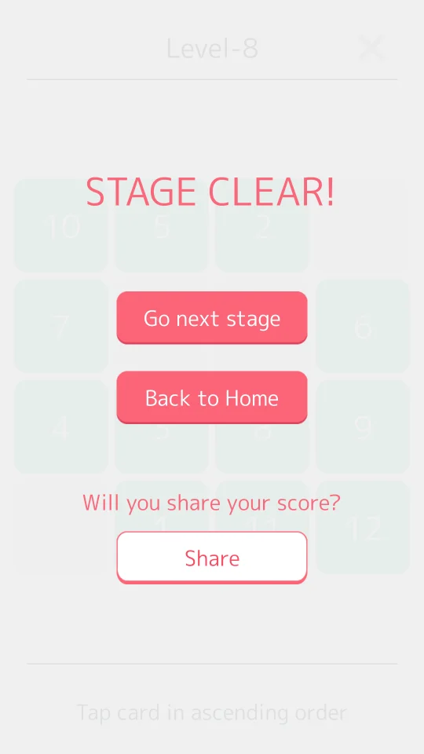
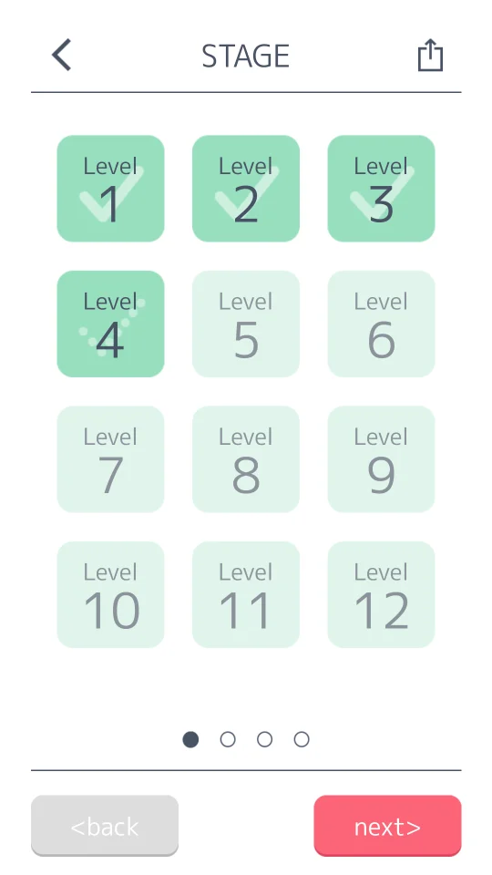
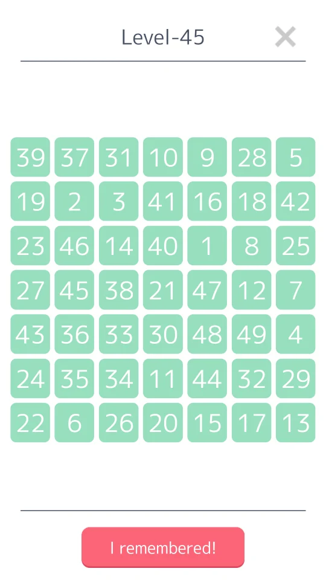

Memorize the board
Study where each number is placed on the grid. There is no time limit, so take as long as you need until the pattern clicks.
45 Stages · 5 to 49 Cards · Free
FERMAT is a clean, focused number memory game for iOS and Android. Memorize where each number sits, flip the cards face down, and tap them in ascending order from 1.
Playable right here — memorize the numbers, then tap I remembered!
No complicated mechanics, no timers, no lives to wait for. Just your spatial memory against the board.
Study where each number is placed on the grid. There is no time limit, so take as long as you need until the pattern clicks.
Tap I remembered! to flip all cards face down. Then tap them in ascending order: 1, 2, 3… One wrong tap ends the stage.
Open every card to clear the stage and unlock the next one. Share your result with an image of the exact board you conquered.
Every stage adds just one more card than the last. As the count grows, the grid expands—pushing your working memory step by step.
Built natively for Android, iPhone, and iPad so every tap feels crisp and responsive.

Jump straight into the game with zero clutter or sign-up screens.

Study the numbered cards at your own pace, then tap "I remembered!".

Every correct tap flips the card back to mint. Stay sharp to the last number.

Celebrate your clear and share an image of the board with friends and family.

Track cleared stages and replay any unlocked level whenever you want.

The ultimate 7×7 board. How far can your memory take you?
Great for a 2-minute brain workout on the train, or a friendly memory challenge with family.
Think at your own rhythm. Cards stay visible until you decide you are ready.
Attach an image of the exact board you cleared to compare records with friends.
A quick 4-card tutorial teaches you how to play in seconds on your very first launch.
No sign-up, no login. Your stage progress is stored safely on your device.
Play on flights, subways, or anywhere without a connection.
Native apps for Android smartphones, iPhone, and iPad—completely free to play.
Memorize the position of each numbered card on the grid, then tap "I remembered!" to flip all cards face down. Tap the cards in ascending order starting from 1. Open every card to clear the stage; one wrong tap ends the attempt.
There are 45 main stages plus a 4-card practice stage at the beginning. Stage 1 starts with 5 cards on a 3×3 grid, and each new stage adds one card until Stage 45 fills an entire 7×7 board with 49 cards.
No. There is no countdown or time pressure. Take as long as you need to memorize the board before tapping "I remembered!".
Yes. FERMAT requires no sign-up or login, works offline, and saves all of your stage progress directly on your device.
Yes, FERMAT is completely free on both Android (Google Play) and iOS (iPhone and iPad on the App Store), with no in-app purchases. An interstitial ad may appear occasionally when retrying a stage.
Yes. Whenever you clear a stage, you can share your achievement along with an image of the exact board you cleared.
Free on iPhone, iPad, and Android. Start with 5 cards and work your way up to 49.